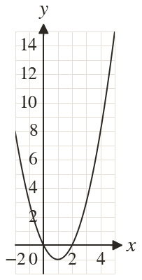

Westonbirt Maths · Quadratic Graphs and Inequalities
Rearranging Equations to Solve Graphically
Name: ______________________ Date: ____________
1
The graph of is drawn. Find the line that solves
2
Use the line to estimate the solutions of to decimal place.
3
Use the same graph to solve
4
Use the same graph to solve
5
Use the same graph to show that has no solutions.
Ext
For which value of does = kx have as its only solution?
